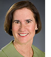

|
|
|
Sometimes you just have to have been there. At the Carpe Diem water, energy, and climate change leadership convening last month,
some 60 participants experienced a collective "aha!" moment. That's when we "got" the depth and breadth of the disconnect between
the funding and policy focus on energy efficiency and the funding and policy focus on water efficiency — and the huge missed
opportunities that disconnect represents. Take a look at the convening
summary for more on what was learned.
This month we ask two leaders in the field for their thoughts on how to get water on the efficiency agenda at the national, state,
and local levels. Dian Grueneich is a California Public Utilities Commissioner and a Carpe Diem contributor.
Fran Spivy-Weber is Vice-Chair of the California State Water Resources Control Board and a Carpe Diem Team member.
Kimery Wiltshire
Director, Carpe Diem Project
|
AN INTERVIEW WITH FRAN SPIVY-WEBER
Conservation is an Asset
|
“The key is to have a campaign to bring parity between water and energy conservation.”
|
|
|
AN INTERVIEW WITH DIAN GRUENEICH
Making the Water-Energy Link
|

“The next update to the CPUC strategic plan should put specific emphasis on the
water-energy nexus.”
|
|
|
Q: You've noted the consensus that water conservation is one of our best and least-cost approaches to
enhancing water supply and reducing energy costs but that we don't have the data to make the case in many western
states. What would be your recommendation for developing the data?
FSW: The key is to have a campaign that will bring more parity between water and energy conservation.
Leadership at the federal level, particularly around the idea of parity between water and energy conservation
Read more.
|
|
Q: At the Carpe Diem convening you noted the need for better integrated water and energy planning at the California PUC
and elsewhere. What would it take to get more focus on water at the CPUC?
DG: Several years ago the CPUC adopted for the first time a water action plan to guide its actions in the
water area. We are now in the process of updating the plan, and this is an area in particular where I think we can put
more emphasis on the linkage between water and energy issues
Read more.
|
|
|